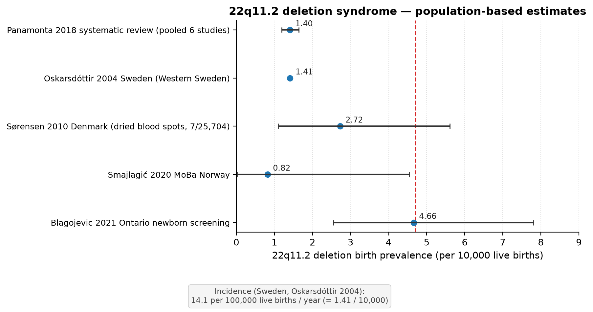
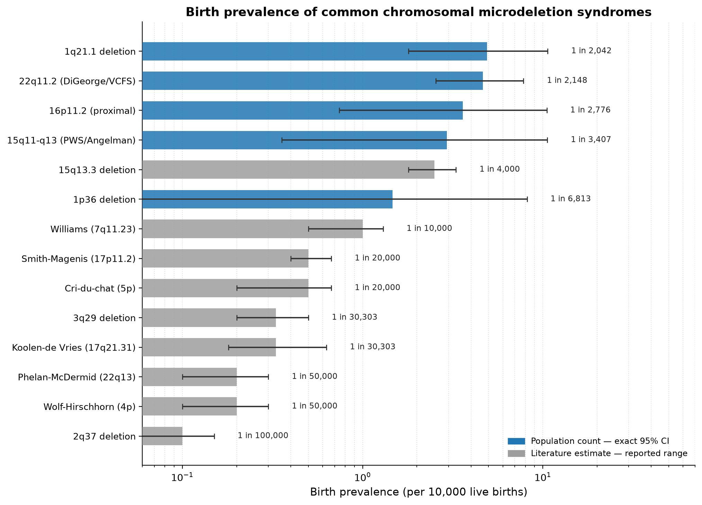
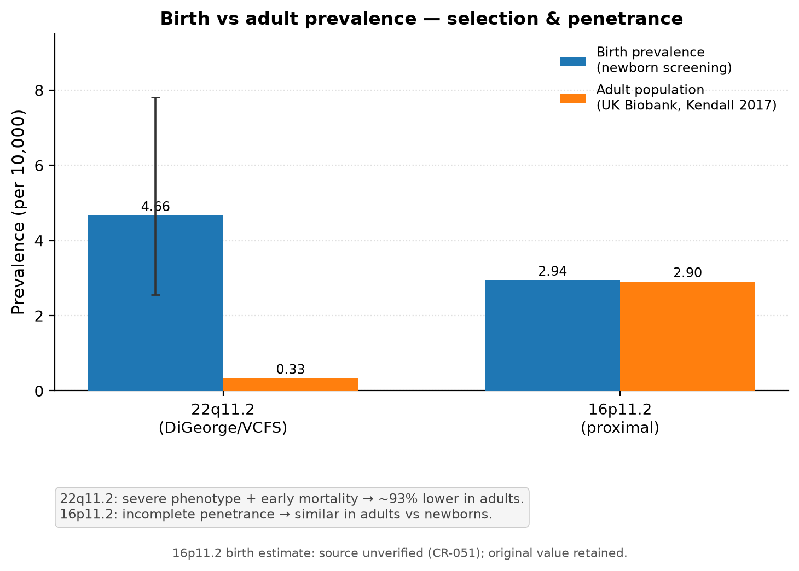
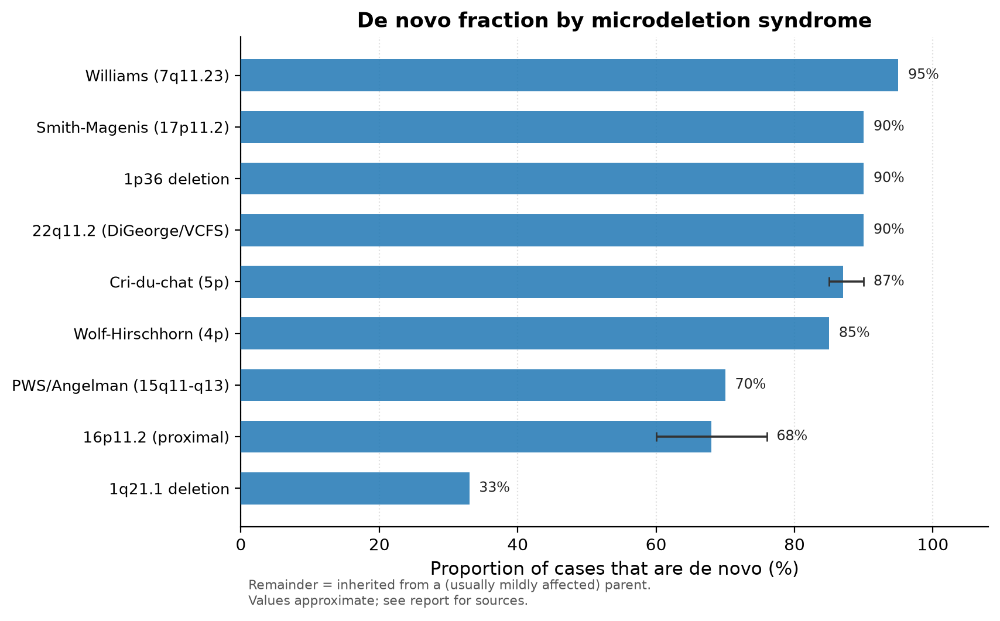

发布说明：本页保留历史描述。数据、模型、Agent 记录和旧原文仅保留在本地；相关引用文字不再提供下载。当前获取与运行方式见项目的数据准备指南。
流行病学资料：数据、图表与交付包
四组文献图表与一个 WBS 历史分析表分开说明；原数据和独立交付包原样保留。
1. 先看这些
- 本模块描述文献中的发生率、出生与成人频率和 de novo 比例，不是单细胞模型的输入。
- CR-051 尚未解决：16p11.2 的 3.60/万与 2.94/万口径/来源未核清。不能把成人对照计数自动标成出生患病率。
- 计数对应的区间与文献给出的范围不是同一种统计量；详细来源与限制见原说明和 04_reports 的流行病学报告。
- 重建预览：在仓库根运行 .venv/pipeline/bin/python 06_epidemiology/scripts/microdeletion_prevalence.py --output-dir /tmp/igem-epidemiology-preview；不会覆盖项目内图表。
- 构建独立交付包使用 deliverables/igem_epidemiology_package/build.py，会覆盖包内复制文件及 ZIP；本次未重建。
- PNG 用于展示，SVG 用于编辑，PDF 用于导出；交付包内的副本用于脱离项目独立阅读，因此不按重复文件删除。
- wbs_interval_de_analysis.csv 属于历史 WBS 差异表达证据，不是流行病学脚本生成物，单独保留。
2. 逐文件盘点
展开 36 个文件的用途和保留理由
| 文件 | 作用 | 现在怎么用 | 陈旧判断 |
|---|---|---|---|
| README_原outputs索引.md | 流行病学来源、操作说明或历史报告：README_原outputs索引.md | 人工阅读；旧结论须结合 CR-051 未决来源说明 | 不建议清理 |
| data/22q11_2_forest.csv | 文献频率/计数表：22q11_2_forest | 图表与独立交付包输入或包内副本 | 不建议清理 |
| data/microdeletion_birth_prevalence.csv | 文献频率/计数表：microdeletion_birth_prevalence | 图表与独立交付包输入或包内副本 | 不建议清理 |
| data/microdeletion_birth_vs_adult.csv | 文献频率/计数表：microdeletion_birth_vs_adult | 图表与独立交付包输入或包内副本 | 不建议清理 |
| data/microdeletion_denovo_fraction.csv | 文献频率/计数表：microdeletion_denovo_fraction | 图表与独立交付包输入或包内副本 | 不建议清理 |
| data/wbs_interval_de_analysis.csv | WBS 差异表达历史结果 | 历史结论证据；单独保留，不能被四表重建覆盖 | 不建议清理 |
| deliverables/igem_epidemiology_package/README.md | 流行病学来源、操作说明或历史报告：README.md | 人工阅读；旧结论须结合 CR-051 未决来源说明 | 不建议清理 |
| deliverables/igem_epidemiology_package/build.py | 复制流行病学图表/表格并构建独立 HTML 和 ZIP 交付包 | 当前 README 列出的手动构建入口；覆盖生成结果前可使用临时目录 | 不建议清理 |
| deliverables/igem_epidemiology_package/data/22q11_2_forest.csv | 文献频率/计数表：22q11_2_forest | 图表与独立交付包输入或包内副本 | 不建议清理 |
| deliverables/igem_epidemiology_package/data/microdeletion_birth_prevalence.csv | 文献频率/计数表：microdeletion_birth_prevalence | 图表与独立交付包输入或包内副本 | 不建议清理 |
| deliverables/igem_epidemiology_package/data/microdeletion_birth_vs_adult.csv | 文献频率/计数表：microdeletion_birth_vs_adult | 图表与独立交付包输入或包内副本 | 不建议清理 |
| deliverables/igem_epidemiology_package/data/microdeletion_denovo_fraction.csv | 文献频率/计数表：microdeletion_denovo_fraction | 图表与独立交付包输入或包内副本 | 不建议清理 |
| deliverables/igem_epidemiology_package/figures/22q11_2_forest.png | 流行病学图：22q11_2_forest（png） | SVG 便于编辑，PNG 便于展示，PDF 便于出版；保留三种用途 | 不建议清理 |
| deliverables/igem_epidemiology_package/figures/22q11_2_forest.svg | 流行病学图：22q11_2_forest（svg） | SVG 便于编辑，PNG 便于展示，PDF 便于出版；保留三种用途 | 不建议清理 |
| deliverables/igem_epidemiology_package/figures/microdeletion_birth_prevalence.png | 流行病学图：microdeletion_birth_prevalence（png） | SVG 便于编辑，PNG 便于展示，PDF 便于出版；保留三种用途 | 不建议清理 |
| deliverables/igem_epidemiology_package/figures/microdeletion_birth_prevalence.svg | 流行病学图：microdeletion_birth_prevalence（svg） | SVG 便于编辑，PNG 便于展示，PDF 便于出版；保留三种用途 | 不建议清理 |
| deliverables/igem_epidemiology_package/figures/microdeletion_birth_vs_adult.png | 流行病学图：microdeletion_birth_vs_adult（png） | SVG 便于编辑，PNG 便于展示，PDF 便于出版；保留三种用途 | 不建议清理 |
| deliverables/igem_epidemiology_package/figures/microdeletion_birth_vs_adult.svg | 流行病学图：microdeletion_birth_vs_adult（svg） | SVG 便于编辑，PNG 便于展示，PDF 便于出版；保留三种用途 | 不建议清理 |
| deliverables/igem_epidemiology_package/figures/microdeletion_denovo_fraction.png | 流行病学图：microdeletion_denovo_fraction（png） | SVG 便于编辑，PNG 便于展示，PDF 便于出版；保留三种用途 | 不建议清理 |
| deliverables/igem_epidemiology_package/figures/microdeletion_denovo_fraction.svg | 流行病学图：microdeletion_denovo_fraction（svg） | SVG 便于编辑，PNG 便于展示，PDF 便于出版；保留三种用途 | 不建议清理 |
| deliverables/igem_epidemiology_package/index.html | 已有独立交付网页，含嵌入图 | 交付包正式入口；本次不覆盖 | 不建议清理 |
| deliverables/igem_epidemiology_package/report.md | 流行病学来源、操作说明或历史报告：report.md | 人工阅读；旧结论须结合 CR-051 未决来源说明 | 不建议清理 |
| deliverables/igem_epidemiology_package.zip | 可独立分享的流行病学交付包快照 | 打包副本；不是与源码重复就可删除 | 不建议清理 |
| figures/22q11_2_forest.pdf | 流行病学图：22q11_2_forest（pdf） | SVG 便于编辑，PNG 便于展示，PDF 便于出版；保留三种用途 | 不建议清理 |
| figures/22q11_2_forest.png | 流行病学图：22q11_2_forest（png） | SVG 便于编辑，PNG 便于展示，PDF 便于出版；保留三种用途 | 不建议清理 |
| figures/22q11_2_forest.svg | 流行病学图：22q11_2_forest（svg） | SVG 便于编辑，PNG 便于展示，PDF 便于出版；保留三种用途 | 不建议清理 |
| figures/microdeletion_birth_prevalence.pdf | 流行病学图：microdeletion_birth_prevalence（pdf） | SVG 便于编辑，PNG 便于展示，PDF 便于出版；保留三种用途 | 不建议清理 |
| figures/microdeletion_birth_prevalence.png | 流行病学图：microdeletion_birth_prevalence（png） | SVG 便于编辑，PNG 便于展示，PDF 便于出版；保留三种用途 | 不建议清理 |
| figures/microdeletion_birth_prevalence.svg | 流行病学图：microdeletion_birth_prevalence（svg） | SVG 便于编辑，PNG 便于展示，PDF 便于出版；保留三种用途 | 不建议清理 |
| figures/microdeletion_birth_vs_adult.pdf | 流行病学图：microdeletion_birth_vs_adult（pdf） | SVG 便于编辑，PNG 便于展示，PDF 便于出版；保留三种用途 | 不建议清理 |
| figures/microdeletion_birth_vs_adult.png | 流行病学图：microdeletion_birth_vs_adult（png） | SVG 便于编辑，PNG 便于展示，PDF 便于出版；保留三种用途 | 不建议清理 |
| figures/microdeletion_birth_vs_adult.svg | 流行病学图：microdeletion_birth_vs_adult（svg） | SVG 便于编辑，PNG 便于展示，PDF 便于出版；保留三种用途 | 不建议清理 |
| figures/microdeletion_denovo_fraction.pdf | 流行病学图：microdeletion_denovo_fraction（pdf） | SVG 便于编辑，PNG 便于展示，PDF 便于出版；保留三种用途 | 不建议清理 |
| figures/microdeletion_denovo_fraction.png | 流行病学图：microdeletion_denovo_fraction（png） | SVG 便于编辑，PNG 便于展示，PDF 便于出版；保留三种用途 | 不建议清理 |
| figures/microdeletion_denovo_fraction.svg | 流行病学图：microdeletion_denovo_fraction（svg） | SVG 便于编辑，PNG 便于展示，PDF 便于出版；保留三种用途 | 不建议清理 |
| scripts/microdeletion_prevalence.py | 从脚本内文献数值生成四张数据表及十二张图 | 当前 README 列出的手动构建入口；覆盖生成结果前可使用临时目录 | 不建议清理 |


3. 原始说明与历史全文
README_原outputs索引.md · 完整原文
保留历史表述与设计理由；旧命令不自动代表当前启动方式。
流行病学图表与数据索引
本索引仅管理 06_epidemiology/。脚本使用内置文献数值生成图表，不读取疾病实验的表达矩阵，也不调用扰动工具。
生成与验证
复用根目录 .venv/pipeline 环境，依赖由 03_pipeline/requirements.txt 统一管理，不另建环境文件。在仓库根目录运行：
.venv/pipeline/bin/python 06_epidemiology/scripts/microdeletion_prevalence.py
.venv/pipeline/bin/python -m unittest discover -s scripts/tests -p test_epidemiology.py -v脚本根据自身位置定位输出，自动创建本模块的 data/、figures/，与启动工作目录无关。每次生成 4 份 CSV + 12 个图文件，覆盖同名生成物，不清空目录或删除其他文件。正式重跑前可先用 Git 保留上一版本。
如需先预览而不覆盖正式图表：
.venv/pipeline/bin/python 06_epidemiology/scripts/microdeletion_prevalence.py --output-dir /tmp/igem-epidemiology-preview该目录也使用 data/、figures/ 布局；相对 --output-dir 按启动目录解释。图表测试在临时目录执行，不覆盖仓库结果，不需要联网或真实疾病数据。
图表与数据一一对应
下列同名图均在 figures/，每组包含 PNG、PDF、SVG。CSV 直接保存本次绘图使用的数值。
| 图表文件名（不含扩展名） | 数据表 | 内容 / 单位 |
|---|---|---|
microdeletion_birth_prevalence |
CSV | 14 个综合征的汇总；pt/lo/hi 为每万例，kind 区分计数区间与文献范围 |
22q11_2_forest |
CSV | 5 项研究；pt/lo/hi、原始计数与分母、来源、单位和区间类型 |
microdeletion_denovo_fraction |
CSV | de novo 比例；v/lo/hi 为百分比，note 为原说明 |
microdeletion_birth_vs_adult |
CSV | birth_* / adult_* 分列；每万例，保留已有计数、区间、来源及来源状态 |
- CSV 空值表示原脚本未提供，不表示零；没有计数或区间时不补造。
- 森林图
label与src保留原研究标签；计数区间仍用 Clopper–Pearson 精确 95% CI。出生—成人比较的出生点与区间保留原脚本的舍入值，不重新计算。 - CR-051 待核对： 16p11.2 在汇总图中为
3/8329 × 10000 ≈ 3.60，来源标为 Cooper 2011 成人对照；对比图中的出生数值为2.94，没有明确来源。用户批准本轮保留两者，不擅自统一；新表birth_src留空、birth_source_status=unverified，对比图和交付页也显示提示。该差异不能当作已核实的同一人群估计。 - 本次工程测试验证输出和图表对应关系，不证明原文献选择、人群可比性或图中的科学解释正确。
data/wbs_interval_de_analysis.csv为既有旁支产物，不由本脚本生成，保留不动。
交付网页与 ZIP
正式图表核对后，再运行：
.venv/pipeline/bin/python 06_epidemiology/deliverables/igem_epidemiology_package/build.py构建脚本从本模块 data/、figures/ 复制四份 CSV 和四组 SVG/PNG，重建内嵌图像的 index.html，最后更新同级 igem_epidemiology_package.zip。三处展示（主图、交付页、ZIP）由同一批结果产生；预览目录不会自动发布到交付包。
旧图可从 Git 修复前版本追溯；不要继续分发旧 ZIP 中错误的森林图。其他项目报告、文献及筛选管线的入口见根目录 README，不在本目录输出。
deliverables/igem_epidemiology_package/README.md · 完整原文
保留历史表述与设计理由；旧命令不自动代表当前启动方式。
iGEM 网页数据包 — 使用说明
本文件夹是「染色体微缺失综合征流行病学数据」的 iGEM wiki 打包版，双语（英文为主 + 中文说明）。
内容
igem_epidemiology_package/
├── index.html ← 自包含 HTML 页面（内嵌 SVG 图 + 表格 + 参考文献），可直接粘进 wiki
├── report.md ← 双语 Markdown 报告（完整来源说明）
├── README.md ← 本文件
├── figures/ ← 4 张图的 SVG（矢量，推荐） + PNG（预览）
│ ├── microdeletion_birth_prevalence.{svg,png} 出生患病率汇总
│ ├── 22q11_2_forest.{svg,png} 22q11.2 多研究森林图
│ ├── microdeletion_denovo_fraction.{svg,png} de novo 比例
│ └── microdeletion_birth_vs_adult.{svg,png} 出生 vs 成人患病率
└── data/ ← 四张与图同名的 CSV 数据表
├── microdeletion_birth_prevalence.csv
├── 22q11_2_forest.csv
├── microdeletion_denovo_fraction.csv
└── microdeletion_birth_vs_adult.csv如何放到 iGEM wiki
iGEM wiki 目前用 HTML/CSS/JS 上传系统（2024 年起的 wiki 编辑器）。两种方式：
方式 A（推荐）：上传整个 HTML 文件
- 在 iGEM wiki 编辑器中，把
index.html的完整内容复制粘贴进你目标页面（Background / Description 页）的 HTML 源码模式。 - 因为图是内嵌 SVG，无需单独上传图片文件，整页即自包含。
- 若编辑器不支持内嵌 SVG，改用方式 B。
方式 B：HTML + 单独上传图片
- 新建页面，粘贴
index.html正文（去掉<figure>里的内嵌 SVG 部分）。 - 在 wiki 的「Upload Files」里上传
figures/下的 4 张 SVG（矢量，缩放不糊，评委友好）。 - 把
<figure>里的内容替换成<img data-historical-src="your-uploaded-filename.svg" title="历史路径，当前未解析；见原始文件" alt="...">。
建议
- 优先用 SVG：矢量图在放大/缩放时清晰，适合评委在大屏查看。
- 参考文献（
index.html末尾的 References）已按期刊格式整理，保留在页面上（iGEM 评审重视可查证的引用）。 - 图像已内嵌 HTML，但四份 CSV 的下载链接依赖包内
data/；上传 wiki 时同时上传数据表并更新下载链接。 - 如需改图，在仓库根目录运行
.venv/pipeline/bin/python 06_epidemiology/scripts/microdeletion_prevalence.py，输出到06_epidemiology/figures/与data/；可先加--output-dir /tmp/igem-epidemiology-preview单独预览。 - 核对后运行
.venv/pipeline/bin/python 06_epidemiology/deliverables/igem_epidemiology_package/build.py，同步四份表与 SVG/PNG、重建 HTML 并更新同级 ZIP；覆盖同名生成物，旧版从 Git 追溯。单独下载的本包用于展示，重建需完整仓库。 - 回归入口：
.venv/pipeline/bin/python -m unittest discover -s scripts/tests -p test_epidemiology.py -v；依赖复用03_pipeline/requirements.txt。
数据来源与注意事项（摘要）
- CR-051 来源待核对： 16p11.2 在出生—成人图中的出生数值为 2.94/万，没有明确来源；汇总图为 3.60/万，来源标为 Cooper 2011 成人对照。按用户决定保留原值，在 CSV、图和网页上标记，不视为已统一的估计。本轮不修改下面的原科学解释，工程测试也不验证这些解释。
- 无内置疾病数据库，数据全部来自公开文献与人群队列，逐条标注来源（见
report.md）。 - 单位：每 10,000 例活产。计数来源用 Clopper–Pearson 精确 95% CI；文献来源给出的是已发表范围（非统计 CI）。
- 关键结论：
- 22q11.2 是最常见且数据最可靠的微缺失（主动筛查 1/2,148）。
- 成人患病率低于出生患病率（选择效应 + 早亡），22q11.2 约降 93%，16p11.2 几乎不变（不完全外显）。
- de novo 比例：重症缺失多新发，16p11.2/1q21.1 常遗传。
deliverables/igem_epidemiology_package/report.md · 完整原文
保留历史表述与设计理由；旧命令不自动代表当前启动方式。
Microdeletion Syndromes — Epidemiological Overview / 微缺失综合征流行病学概览
2026-09-24 / CR-051 待核对： 16p11.2 的汇总值为 3.60/万（原标注 Cooper 2011 成人对照），出生—成人图的出生值为 2.94/万且来源不明。本轮按用户决定保留原数值与正文，不视为已统一的估计；来源与人群口径待另行核查。图表工程修复不验证原科学解释。四份绘图数据见
data/中的同名 CSV。
Bilingual note / 双语说明：正文以英文为主（iGEM 评委评审语言），关键段落附中文说明。 All prevalence is per 10,000 live births (/万). “Count (CI)” = Clopper–Pearson exact 95% CI from a population count; “literature” = published min–max range (not a statistical CI).
1. Birth prevalence / 出生患病率
The most common microdeletion is 22q11.2 (DiGeorge/VCFS): contemporary newborn screening gives 4.7 / 10,000 live births (95% CI 2.5–7.8), i.e. 1 in 2,148 [1]. Next most common are 1q21.1, 16p11.2 and 15q11-q13 (PWS/Angelman). The rarest (4p Wolf–Hirschhorn, 22q13 Phelan-McDermid, 2q37) are ~1 in 50,000–100,000.
中文：最常见的是 22q11.2（1/2,148），其次 1q21.1、16p11.2、15q11-q13；最罕见 4p/22q13/2q37（约 1/5万–1/10万）。
Figure 1 — figures/microdeletion_birth_prevalence.svg (blue = count with exact CI, grey = literature range)
| Syndrome (region) | /10k | 95% CI or range | ~1 in | Type |
|---|---|---|---|---|
| 22q11.2 (DiGeorge/VCFS) | 4.66 | 2.55–7.81 | 2,148 | count |
| 1q21.1 deletion | 4.90 | 1.80–10.66 | 2,042 | count |
| 16p11.2 (proximal) | 3.60 | 0.74–10.52 | 2,800 | count |
| 15q11-q13 (PWS/Angelman) | 2.94 | 0.36–10.60 | 3,400 | count |
| 15q13.3 deletion | 2.50 | 1.80–3.30 | 4,000 | literature |
| 1p36 deletion | 1.47 | 0.04–8.18 | 6,800 | count |
| Williams (7q11.23) | 1.00 | 0.50–1.30 | 10,000 | literature |
| Cri-du-chat (5p) | 0.50 | 0.20–0.67 | 20,000 | literature |
| Smith-Magenis (17p11.2) | 0.50 | 0.40–0.67 | 20,000 | literature |
| Koolen-de Vries (17q21.31) | 0.33 | 0.18–0.63 | 30,000 | literature |
| 3q29 deletion | 0.33 | 0.20–0.50 | 30,000 | literature |
| Wolf-Hirschhorn (4p) | 0.20 | 0.10–0.30 | 50,000 | literature |
| Phelan-McDermid (22q13) | 0.20 | 0.10–0.30 | 50,000 | literature |
| 2q37 deletion | 0.10 | 0.05–0.15 | 100,000 | literature |
2. 22q11.2 across studies & incidence / 多研究对比与发病率
Estimates span ~10-fold by ascertainment method: clinical/registry ~1.4/10k vs prospective molecular newborn screening 4.7/10k [1,7,8,9]. The Swedish population study reports a mean annual incidence of 14.1 / 100,000 live births [7].
中文：22q11.2 估计相差约 10 倍，由确定方法决定；瑞典年均发病率 14.1/10 万活产。
Figure 2 — figures/22q11_2_forest.svg
| Study | /10k |
|---|---|
| Panamonta 2016 systematic review (pooled, 156/1,111,336) | 1.40 |
| Oskarsdóttir 2004 Sweden | 1.41 |
| Sørensen 2010 Denmark (7/25,704) | 2.72 |
| Smajlagić 2020 MoBa Norway (1/12,252) | 0.82 |
| Blagojevic 2021 Ontario newborn screening (14/30,074) | 4.66 (2.55–7.81) |
3. De novo fraction / 新发（de novo）比例
Most severe recurrent deletions are de novo (Williams ~95%, 22q11.2 >90%, 1p36/Smith-Magenis ~90%, Cri-du-chat 85–90%). 16p11.2 is de novo in only 60–76% and 1q21.1 in ~33% — more often inherited [10,11].
中文：重症复发性缺失多为新发；16p11.2（60–76%）和 1q21.1（~33%）常遗传自轻症父母。
Figure 3 — figures/microdeletion_denovo_fraction.svg
| Syndrome | De novo % |
|---|---|
| Williams (7q11.23) | ~95 |
| 22q11.2 (3 Mb) | >90 |
| 1p36 / Smith-Magenis | ~90 |
| Cri-du-chat (5p) | 85–90 |
| Wolf-Hirschhorn (4p) | ~85 |
| PWS/Angelman (15q11-q13) | ~70 |
| 16p11.2 (proximal) | 60–76 |
| 1q21.1 deletion | ~33 |
4. Birth vs adult prevalence / 出生 vs 成人患病率（选择 & 外显率）
Adult population prevalence is lower than birth prevalence (reduced fertility + early mortality). 22q11.2 drops from 4.7/10k at birth to 0.33/10k in adults (UK Biobank, 5 carriers/151,659) — a ~93% drop. 16p11.2 stays ~2.9/10k in adults — incomplete penetrance [10]. MoBa: recurrent NDD CNVs in 0.48% of newborns vs 0.35–0.36% of parents (~1/3 negative selection) [2].
中文：成人率低于出生率。22q11.2 从 4.7/万降至成人 0.33/万（约 93% 下降，重症）；16p11.2 成人仍 ~2.9/万（不完全外显）。
Figure 4 — figures/microdeletion_birth_vs_adult.svg
References / 参考文献
- Blagojevic C, et al. CMAJ Open 2021;9:E802–E809. doi:10.9778/cmajo.20200294
- Smajlagić D, et al. Eur J Hum Genet 2021;29:205–215. doi:10.1038/s41431-020-00707-7
- Tucker T, et al. Mol Genet Genomic Med 2013;1:87–97. doi:10.1002/mgg3.12
- Cooper GM, et al. Nat Genet 2011;43:838–846. doi:10.1038/ng.909
- Heilstedt HA, et al. Am J Hum Genet 2003;72:1200–1212. doi:10.1086/375177
- Gillentine MA, et al. J Hum Genet 2018;63:795–801. doi:10.1038/s10038-018-0451-x
- Oskarsdóttir S, et al. Arch Dis Child 2004;89:148–151. doi:10.1136/adc.2003.026880
- Sørensen KM, et al. J Mol Diagn 2010;12:147–151. doi:10.2353/jmoldx.2010.090099
- Panamonta V, et al. J Med Assoc Thai 2016;99(Suppl 5):S187–S193. PMID:29906080
- Kendall KM, et al. Biol Psychiatry 2017;82:103–110. doi:10.1016/j.biopsych.2016.08.014
- GeneReviews (NCBI Bookshelf): 22q11.2 (NBK1523); 16p11.2 (NBK11167); Williams (NBK1249)
- Orphanet: 22q11.2 (ORPHA:567); Williams (ORPHA:904); Monosomy 5p (ORPHA:281)
4. 图表预览
以下为既存历史图。涉及未决来源的出生/成人对比图须连同 CR-051 说明阅读。
22q11_2_forest

microdeletion_birth_prevalence

microdeletion_birth_vs_adult

microdeletion_denovo_fraction
